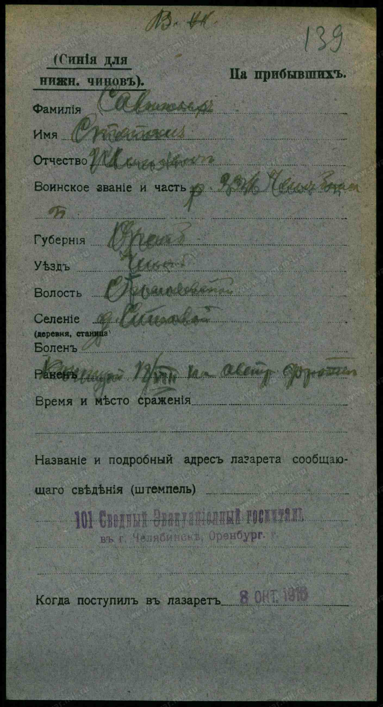
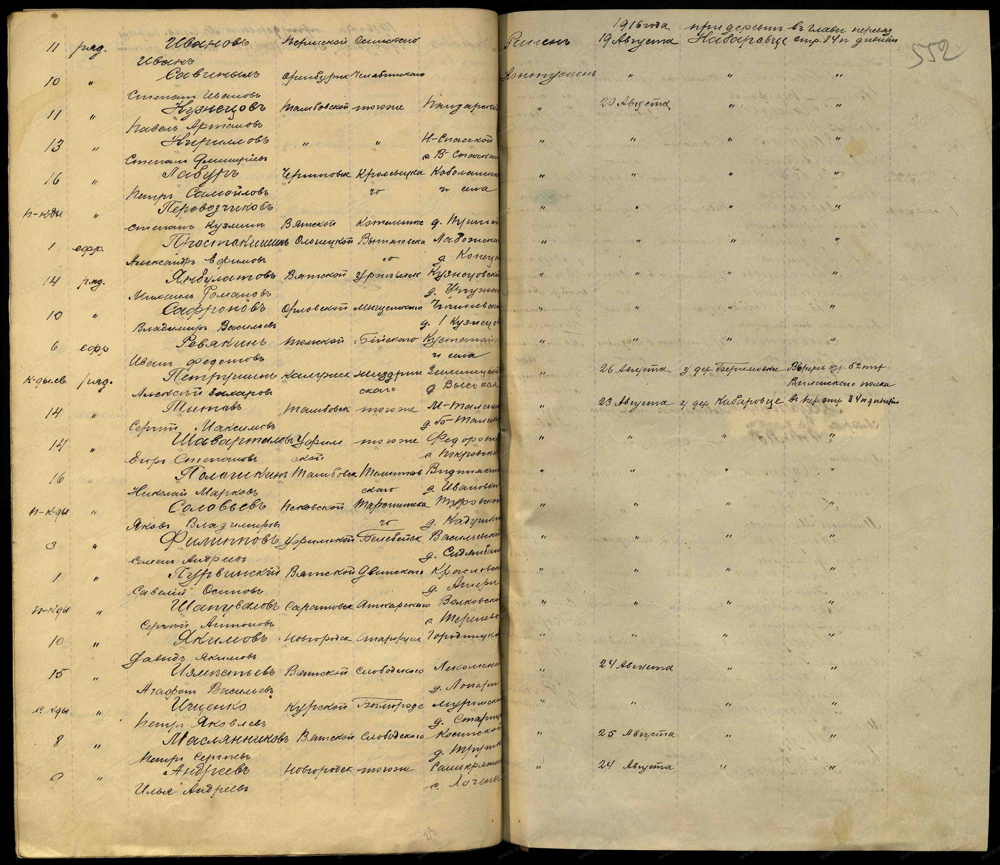
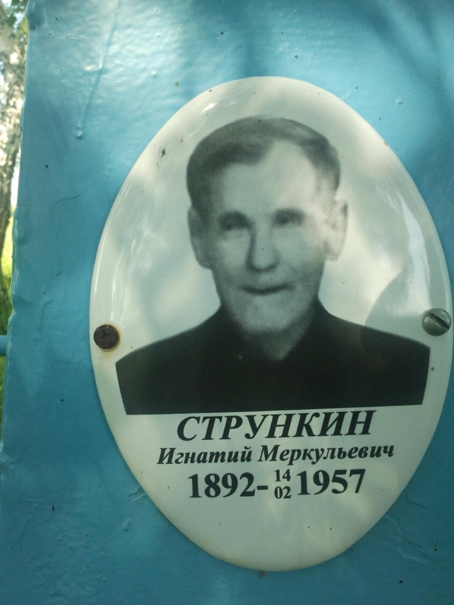
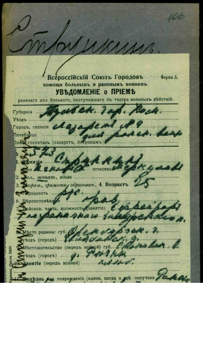
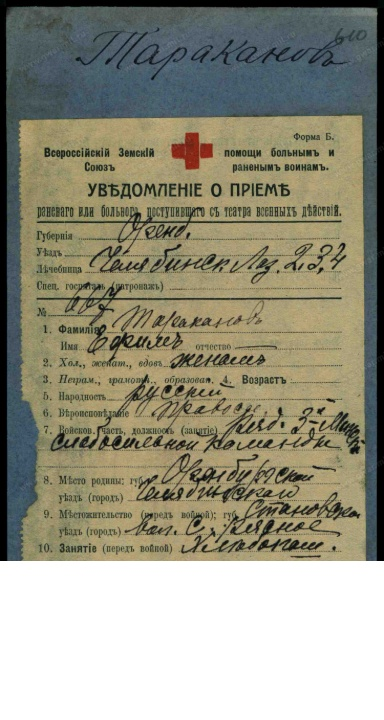
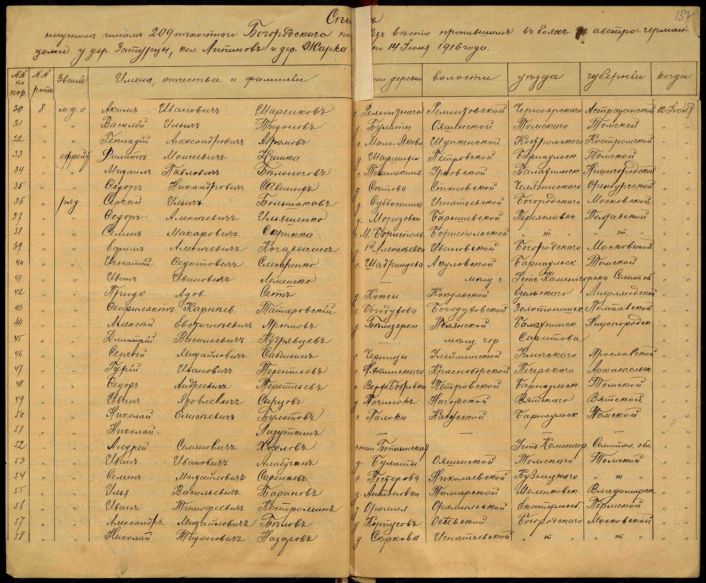
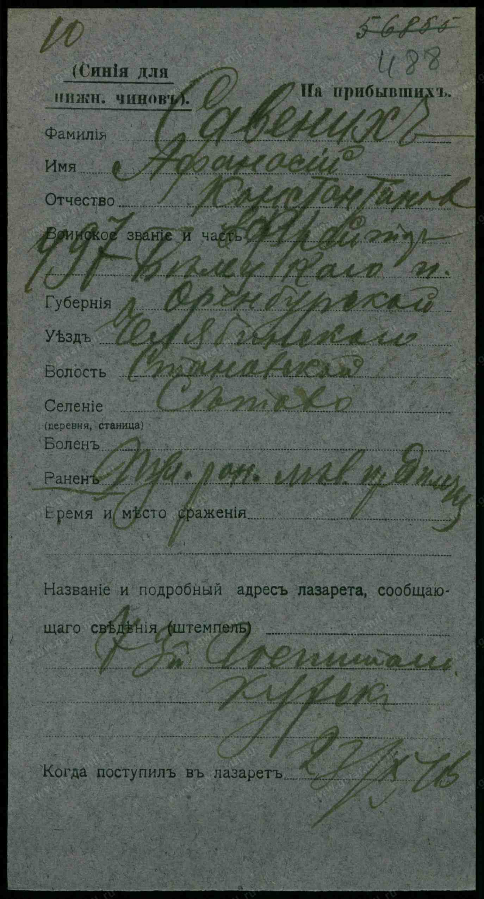

5
Выявленных участников ПМВ из родных сёл
100%
Первичные учетные документы РГВИА
4
Боевых полка и подразделения Русской Армии
1916
Участие в Брусиловском прорыве на Австрийском фронте
Архивная точность: Все факты участия и ранений подтверждены первичными актовыми документами Российского государственного военно-исторического архива (РГВИА, Москва) — именными списками потерь полков и картотекой Бюро учета потерь на фронтах Первой мировой войны.
Фронтовые судьбы участников войны
Уроженцы Челябинского уезда Оренбургской губернии сражались в рядах пехотных полков императорской армии на Юго-Западном и Северо-Западном фронтах, отражали наступления противника и шли на штурм неприятельских позиций в Карпатах и Галиции.
Класс А · Прямой родственный круг
Савиных Степан Иванович
Род Савиных (д. Сетова) · Родной брат деда Ивана / дядя бабы Ани (Анны Ивановны Савиных)
| Воинское звание: |
Рядовой |
| Воинская часть: |
336-й пехотный Челябинский полк (84-я пехотная дивизия) |
| Место рождения: |
Оренбургская губ., Челябинский уезд, Становская вол., деревня Сетова |
| Боевое событие: |
Ранен / контужен в бою 18–19 августа 1916 г. у деревни Кабаровце (Австрийский фронт) |
| Эвакуация: |
Главный перевязочный отряд 84-й дивизии; поступил в лазарет 08.10.1916 г. |
| Исторический контекст: |
Ожесточенные сражения Брусиловского прорыва в полосе Юго-Западного фронта против австро-германских войск. |
| Шифры РГВИА: |
Фонд Картотека потерь ПМВ, Ящик 3023-С; Фонд 16196, Опись 1, Дело 540, Документ № 169899. |
В метрических книгах Свято-Троицкой церкви с. Станового за 1914 г. Стефан Иванович Савиных также зафиксирован как крестьянин деревни Сетовой (ОГАЧО, Д. 582, л. 331).
Госпитальная карточка РГВИА (Ящик 3023-С)

Именной список потерь 336-го Челябинского полка (Д. 540)

Класс А · Прямая ветвь Стрункиных
Стрункин Игнатий Меркурьевич
Род Стрункиных (д. Речная) · Родной брат деда Василия Меркурьевича Стрункина (1900 г.р.)
| Годы жизни: |
1892 — 14 февраля 1957 (похоронен на кладбище с. Речное) |
| Воинское звание: |
Ефрейтор |
| Воинская часть: |
1-й Заамурский пограничный пехотный полк |
| Место рождения: |
Оренбургская губ., Челябинский уезд, Становская вол., деревня Речная |
| Боевое событие: |
Ранен в бою 30 сентября 1915 г. у селения Пилава |
| Госпиталь: |
Доставлен 25.10.1915 в Лазарет № 9 Всероссийского союза городов в г. Туле |
| Шифры РГВИА: |
Фонд Картотека потерь ПМВ, Ящик 3237-С, Документ № 106. |
После фронта вернулся в родное село Речное, работал на земле, вырастил детей: Екатерину, Веру, Михаила, Павла, Лидию, Клавдию.

Уведомление о приеме раненого (РГВИА, Ящик 3237-С)

Класс А · Род Таракановых
Тараканов Ефим
Род Таракановых (д. Речная) · Отец бабушки Зинаиды Ефимовны Таракановой (Стрункиной)
| Период жизни: |
ок. 1888–1895 — XX век |
| Воинское звание: |
Рядовой |
| Воинская часть: |
3-я Минская слабосильная команда |
| Место рождения: |
Оренбургская губ., Челябинский уезд, Становская вол., д. Речное (в документе опечатка писаря «Рясное») |
| Боевое событие: |
Ранен на театре военных действий 28 марта 1915 г. |
| Госпиталь: |
Эвакуирован в тыловой лазарет города Челябинска |
| Шифры РГВИА: |
Фонд Картотека потерь ПМВ, Ящик 4433-Т, Документ № 610. |
В 1914 г. зафиксирован как поручитель на венчании в Свято-Троицкой церкви с. Станового («села Становаго крестьянин Евфимий Меркурьев Тараканов», ОГАЧО, Д. 604, л. 358).
Госпитальная карточка раненого РГВИА (Ящик 4433-Т)

Класс B · Сородичи д. Сетова (LEAD-0038)
Савиных Федор Никандрович
Род Савиных (д. Сетова) · Ветвь Никандра Савиных
| Воинское звание: |
Рядовой |
| Воинская часть: |
209-й пехотный Богородский полк (53-я пехотная дивизия) |
| Место рождения: |
Оренбургская губ., Челябинский уезд, Становская вол., деревня Сетова |
| Боевое событие: |
Пропал без вести в бою 12 июня 1916 г. |
| Шифры РГВИА: |
Фонд 16196, Опись 1, Дело 392, Документ № 152640. |
Именной список потерь 209-го пехотного полка фиксирует факт пропажи без вести во время летней наступательной кампании 1916 г.
Именной список потерь 209-го полка (РГВИА, Д. 392)

Класс B · Сородичи д. Сетова (LEAD-0039)
Савених (Савиных) Афанасий Константинович
Род Савиных (д. Сетова) · Ветвь Константина Савиных
| Воинское звание: |
Рядовой |
| Воинская часть: |
497-й пехотный Белецкий полк (125-я пехотная дивизия) |
| Место рождения: |
Оренбургская губ., Челябинский уезд, Становская вол., село/деревня Сетовское (Сетова) |
| Боевое событие: |
Ранен / контужен в бою 23 октября 1916 г. |
| Госпиталь: |
Поступил на излечение в тыловой госпиталь |
| Шифры РГВИА: |
Фонд Картотека потерь ПМВ, Ящик 3019-С. |
В документе фамилия зафиксирована в уральской орфографической вариации «Савених».
Карточка учета раненого РГВИА (Ящик 3019-С)

Полки, в которых служили наши земляки
Уральские крестьяне призывались по жребию и по всеобщей воинской повинности, попадая как в родные полки Уральского военного округа, так и в пограничные и армейские дивизии действующей армии.
336-й пехотный Челябинский полк
Сформирован при мобилизации в 1914 г. в г. Челябинске (второочередной полк 84-й пехотной дивизии). Сражался в тяжелейших боях Брусиловского прорыва лета–осени 1916 года в районе д. Кабаровце.
Служили: рядовой Степан Иванович Савиных.
1-й Заамурский пограничный пехотный полк
Элитное пограничное формирование Заамурского округа, переброшенное на европейский театр военных действий. Полк отличился стойкостью в осенних боях 1915 года в Галиции у селения Пилава.
Служили: ефрейтор Игнатий Меркурьевич Стрункин.
209-й пехотный Богородский полк
Входил в состав 53-й пехотной дивизии. Принимал участие в непрерывных боях на Северном и Западном фронтах. В июне 1916 г. вел кровопролитные атаки против укрепленных позиций противника.
Служили: рядовой Федор Никандрович Савиных.
Сводный реестр первичных документов РГВИА
Все документы каталогизированы в Генеральном мастер-реестре семейного архива со ссылками на подлинники.
| ФИО воина |
Чин / Часть |
Событие и дата |
Архивный шифр РГВИА |
ID реестра |
Первоисточник |
| Савиных Степан Иванович |
Рядовой, 336-й пехотный Челябинский полк |
Ранен 18–19.08.1916 (д. Кабаровце) |
Картотека потерь, Ящик 3023-С; Ф. 16196, Оп. 1, Д. 540 |
P160 (S57, S58) |
gwar.mil.ru #20797680 |
| Стрункин Игнат Меркулович |
Ефрейтор, 1-й Заамурский пограничный полк |
Ранен 30.09.1915 (с. Пилава) |
Картотека потерь, Ящик 3237-С, Док. № 106 |
I19 (S62) |
gwar.mil.ru #20574972 |
| Тараканов Ефим |
Рядовой, 3-я Минская слабосильная команда |
Ранен 28.03.1915 |
Картотека потерь, Ящик 4433-Т, Док. № 610 |
I4 (S61) |
gwar.mil.ru #20856879 |
| Савиных Федор Никандрович |
Рядовой, 209-й пехотный Богородский полк |
Пропал без вести 12.06.1916 |
Ф. 16196, Оп. 1, Д. 392, Док. № 152640 |
LEAD-0038 (S59) |
gwar.mil.ru #11935481 |
| Савених Афанасий Константинович |
Рядовой, 497-й пехотный Белецкий полк |
Ранен 23.10.1916 |
Картотека потерь, Ящик 3019-С |
LEAD-0039 (S60) |
gwar.mil.ru #20802512 |
Методология доказательств и разделения родства
Регламент проекта (Правило 5): Наличие архивного документа о ранении или службе человека (Класс А) удостоверяет факт его участия в Первой мировой войне. Точная степень родства каждого воина по отношению к основному древу верифицируется строго по метрическим книгам о рождении и посемейным спискам. Сородичи из деревни Сетова (Федор Никандрович и Афанасий Константинович) изолированы в статусе Класс B (LEAD) до выверки 10-й ревизии 1858 года.